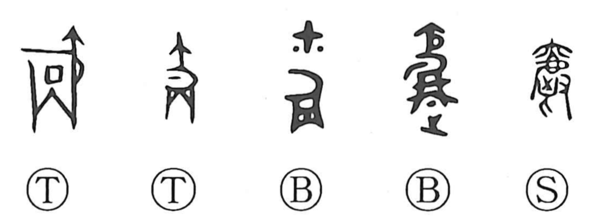

爵

Kun: sakazuki | On: shaku
wine cup ・ ritual wine vessel ・ peerage ・ noble rank
Explanation
In its oldest forms, 爵 is a straightforward pictograph of the bronze wine cup known as a jue, its distinctive shape carried into writing just as it was. In antiquity, rewards and investitures were accompanied by the presentation of wine in this vessel; thus the vessel became a symbol of conferred honor. From that ritual setting, the word broadened to signify ranks of nobility themselves, so that 公, 侯, 伯, 子, and 男 are collectively called the “five 爵,” and terms like 爵位 (peerage) and 公爵 (duke) reflect this development from sacred cup to title.